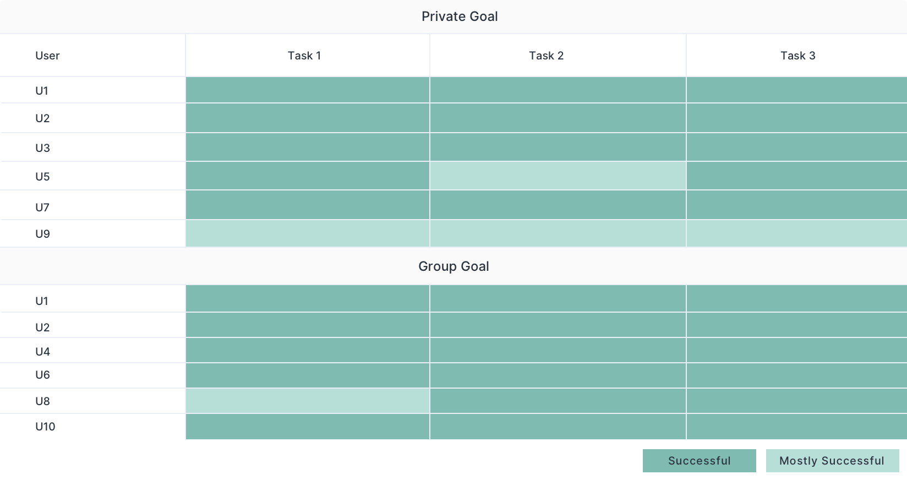

INTRODUCTION
Overview
Goal Setter is an online tool plugged into our partner platform Coursera to improve the online learning experience of learners who take online courses provided by the University of Michigan. The tool allows learners to set up a goal at the beginning of the course to improve the issue of high attrition rates and learners' sense of isolation in the online learning experience. Along our research and design process, we also wrote a case study of "Creating and Evaluating a Goal Setting Prototype for MOOCs", which is accepted by CHI 2020 Conference.
With 101 million enrollments in 2018, massive open online courses (MOOCs) have drastically increased access to online learning resources. However, many challenges still exist in the MOOC space, such as high attrition rates and a sense of electronic isolation. To address these problems, we designed and developed this goal-setting web application with the following objectives:
Increase Motivations
To increase learners’ awareness of their desired outcomes and motivations to engage with the course.
Scafolding Experience
To provide online learners a personalized and scaffolded goal-setting experience.
Social Experience
To afford learners new ways of connecting with each other in the online learning environment.
01. Create or Join a Goal
Learners start by going through group goals published by other learners, and have the options of either joining one or creating one by their own.
02. Set up a Goal
If users decide to create a goal by their own, they go through a five-step goal-setting process to create either a private or a group goal.
03. Review Your Goal
After setting up the goal, users could review their goal on the “My Goal” page. If learners created a group goal, they could also engage into the online chat with other learners who share the same goal.
DESIGN PROCESS
How I proceeded
The full development cycle of this tool was about 4 months. The timeline below shows the primary research, design and develop process I participated in.
RESEARCH
What's Out There
I started the whole process by conducting research to understand the main pain point of online learning and how some existing tools perform.
01. Background Reseach
In the early stage of preliminary research, I gathered insights from colleagues in various areas, academic literature and blog posts on goal-setting and MOOC interventions. I summarized the key findings as below:
Goal-setting plays a significant role in MOOC learner’s success
Online education can sometimes lead learners to feel "esolated" from instructional staff and classmates.
Goals can be converted into social objects to improve motivations and accountabilities.
02. Competitive Analysis
Before heading to concept ideation, I also conducted the competitive analysis on goal-setting related tools and platforms, which included coach.me, DuoLingo and Coursera on their features of creating goals, tracking goals and their overall strengths and weakness.
Common Strengths
They all include progress charts and email reminders as a way of motivating users and keeping track of their goals.
Common Weakness
They all rely on daily user input and incompatibility with the learning tools interoperability (LTI) standard.
IDEATION
Thinking About Solutions
To ideate design solutions, I organized and ran two workshops and one brainstorm session within our core team and across the office.
01. Personas and User Journey Map
I started the ideation session by gathering insights from wider range of the group and taking different user personas into considerations to better understand our target users. I designed and organized an 1-hour workshop with 6 participants, in which the group generated 12 possible personas and 3 user journey maps. Below are examples of personas we generated.
Frederick Nguyen
Frederick is a 24-year-old recent college graduate student with experience in HTML and CSS. He wants to master Javascript basics without having to compelete all parts of the course.
Lizzie Park
Lizzie is a 30-year-old high school teacher who wants to supplement content in the classroom, but she is unsure about the student expectations from the course.
Annie Patrick
Annie is in her 40s with family who wants career change into Data Science, but she is lacking of motivation and free time. She is unsure about the outcome and struggles with self-doubt, but has no one to turn to for suggestions and help.
02. Brainstorming
Based on the previous research and persona, I led the group to brainstorm an initial set of potential features to establish a shared understanding of the project direction and ensure that selected features aligned with our goals of the project.
03. Lightning Design Jam
After the first design jam and the brainstorm session, I found the team came to the situation of having too many ideas and found it hard to narrow down the scope. Thus, I followed the Lightning design jam process that was firstly brought up by designers from AJ & Smart, which helped me find the key pain points to focus on.
KEY FINIDNGS
From Research to Design
After the initial research and ideation, I synthesized key findings from earlier steps to better instruct my later design decisions.
DESIGN
From Sketch to Design
I started my design process from sketch and took several rounds of iterations from wireframes to the final prototype based on discussions with the team and feedback from the usability test.
01. Initial Sketches
I started visualizing the interfaces by sketching on paper to better streamline the flow and the relationship and interactions among pages.
02. Wireframe
I then created some initial wireframes and shared it with the team for feedback. A round of iteration was conducted after that, and below is one of the key iterations.

Key Iteration/
Break down the goal-setting process for a more conversational and scaffolded experience.
Before
After
03. Mid-fi Prototype
Taking the iterated wireframes back to the team again, I got further advice on the details of the design. Taking the feedback, I iterated the wireframes into the mid-fi prototypes.

Key Iteration/1
Redesign the progress bar into a side navigation bar to make the interface more accessible and navigatable.
Before

After
Key Iteration/2
Give learners a taste of the group goal they could join before they make the decision of whether to join or create a goal.
Before
After
04. Usability Test
Collaborating with another designer, we then conducted 10 usability tests with participants who had experience of taking MOOCs and gathered feedback to conduct further iterations on the design.
User Performance
Usability Feedback
DESIGN GUIDELINE
Component Library
In the meantime of conducting the usability test, I built up the design system of the tool. Something I kept in mind while building the design system was the reusability and accessibility of the whole library.
05. Hi-fi Prototype
After the usability test, I iterated the design again and applied the design system to create the hi-fi prototypes. Below is the key iteration at this stage.

Key Iteration/
Reduce the text on the start page and combine the buttons for creating a goal on Create or Join a Goal page.
Before
After
DESIGN
Design Details
01. Create or Join a Goal
Users start by creating a goal or joining a group goal that is already created by other users.
02. Set up a Goal
Users walk through a light goal-setting process with 5 steps. The scaffolding experience guide users to set up a smart goal for themselves.
03. Create or Join a Goal
After setting up the goal, users get to the “My Goal” page, where they could see and reflect on the goal they set up for themselves. For group goals, there is also a discussion forum for learners to communicate with others who share the same goal.
05. Responsive Design
To ensure users have the best user experience on different devices, I also created the responsive design of each interfaces to adapt to different screen sizes.
Landing Page
Create or Join a Goal Page
Goal-setting Page
My Goal Page
DESIGN DEMO
Interact With the Prototype
Below is a clickable prototype of the tool. Now you could click through to see how Goal Setter helps users setting up and reflecting on their goals.